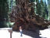

2004年8月10日 20時18分撮影
荷物は必要最小限。。だけど、浴衣だけは持参しちゃいました。
お風呂上りに着用、髪の毛もママが結って、ちょっぴりオメカシです。2004年8月10日 14時13分撮影
まつぼっくりも巨大です!! 由起子の顔より長いのだ!!
2004年8月10日 13時12分撮影
3日目AM、巨大セコイヤの木々が生息しているマリポサグローブへ
木の根っこがこんなに大きいのです！！2004年8月9日 13時21分撮影
8日〜15日までの１週間、アメリカ：ヨセミテ国立公園で過ごす
2日目AM、グレイシャーポイントへ向かう途中のビュースポット：
トンネルビュー展望台からヨセミテバレーを眺める2004年7月11日 16時11分撮影
終了後の会場で。両ばあちゃんから花束の差し入れを頂きました2004年7月11日 13時07分撮影
ピアノの発表会で「かわいいはりねずみ」「ひょっこりひょうたん島」
を弾きました。トップバッターで〜す！2004年6月5日 14時40分撮影
たくさんの遊び道具を持って、合唱団の合宿に参加。2004年6月5日 11時07分撮影分撮影
父兄参観日：腕時計を作りました。2004年5月23日 9時54分撮影分撮影
パパの同窓会旅行に参加して、北村のおじちゃんに
テニスを教えてもらいました！上手になりたいでっす。。。2004年5月10日 17時18分撮影
今日はママのお誕生日。「晩御飯はユキが作る」と言って、
ギョーザ２種類とご飯を炊いてくれました。